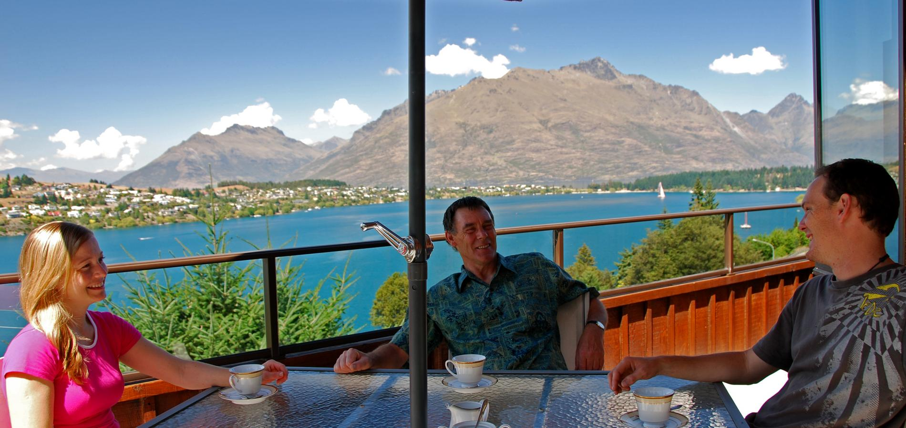
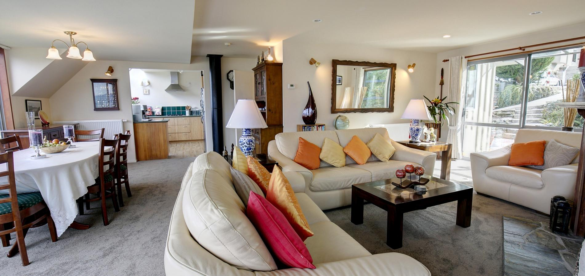
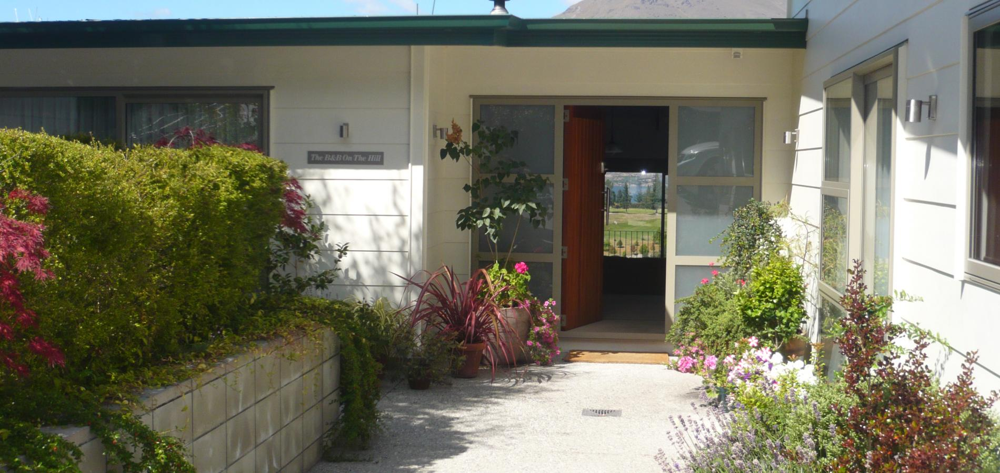
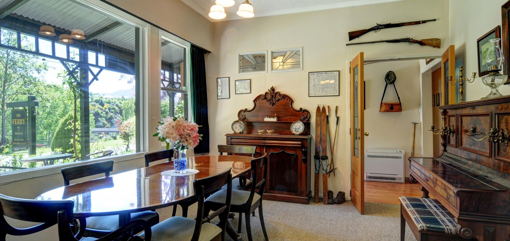

New Zealand is well known for its warm welcoming hospitality, and there’s no better way to experience this by staying at one of Queenstown’s bed and breakfasts, homestays,
farm stays, or hosted boutique lodges. If you are looking for accommodation with the personal touch, and the comforts of home, a hosted property is for you. Many B&B’s are
located a short drive from central Queenstown or in nearby Arrowtown or Glenorchy, where you can interact with your hosts over breakfast and pick their brain for local knowledge.

Larch Hill Homestay Bed & Breakfast
Lesley and Chris offer you a warm welcome to Larch Hill B&B in beautiful Queenstown, purpose built on an elevated site overlooking
Lake Wakatipu. As featured in 'National Geographic Traveler' magazine, all rooms in our comfortable and relaxing homestay have spectacular lake and mountain views, with tea/coffee
making facilities.

Alpine Suites Bed & Breakfast
Created by Colin and Yolanda Jenner, Alpine Suites is a friendly, family owned and operated accommodation facility, with quality at an
affordable price. Situated just 5 km from the Airport and 3 Km from downtown Queenstown, Alpine Suites is truly located at the heart of the worlds adventure capital and New Zealand's
number one resort destination - Queenstown.

B&B on the Hill
Quality Bed & Breakfast accommodation, in a quiet location but, within 10 minutes walk of the centre of Queenstown. With panoramic views of Lake Wakatipu
and the surrounding mountains. Recently refurbished rooms provide ensuite accommodation. The rooms are equipped with a safety deposit box, fridge, Sky TV, 100% cotton sheets/towels,
wireless internet and tea/coffee making facility.

The Old Ferry Hotel B&B
The Ferry Bed and Breakfast is a charming 140 year old historic building, now operating as a bed & breakfast. The B&B is situated in a delightful
rural area above the famous Shotover River and next to the historic Shotover Bridge, is close to Queenstown, Arrowtown and airport and central to all attractions. Surrounded by
delightful English cottage gardens and set in tranquil scenic surroundings.